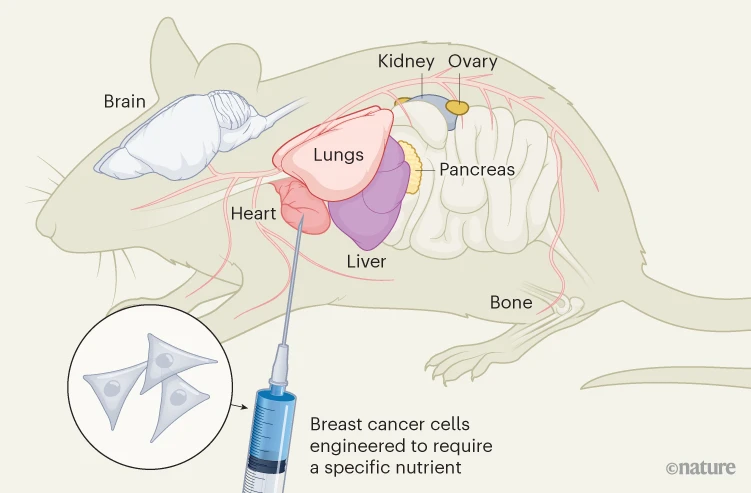

Lab Publications

Nature Protocols · Research of the Week
Nature Protocols (2026) · doi:10.1038/s41596-026-01409-y
Prior Work
Nutrient requirements of organ-specific metastasis in breast cancer
Nature 649, 1292–1301 (2026) · doi:10.1038/s41586-025-09898-9

News & Views: The complex role of nutrients in cancer spread — Nature (2026)Programmable nucleic acid sensing in human cells using circularizable ssDNA
Nature Communications 17 (2026) · doi:10.1038/s41467-026-73990-5
Short single-stranded DNA oligonucleotides enable intracellular transcription of functional RNAs in mammalian cellsPreprint
bioRxiv 2026.05.30.729002 (2026) · doi:10.1101/2026.05.30.729002
Engineered base editors with reduced bystander editing through directed evolution
Nature Biotechnology (2025) · doi:10.1038/s41587-025-02937-w
Randomizing the human genome by engineering recombination between repeat elements
Science 387, eado3979 (2025) · doi:10.1126/science.ado3979
Nucleotide depletion promotes cell fate transitions by inducing DNA replication stress
Developmental Cell 59(16), 2203–2221 (2024) · doi:10.1016/j.devcel.2024.05.010
mRNA trans-splicing dual AAV vectors for (epi)genome editing and gene therapy
Nature Communications 14(1), 6578 (2023) · doi:10.1038/s41467-023-42386-0
Screening in serum-derived medium reveals differential response to compounds targeting metabolism
Cell Chemical Biology 30(9), 1156–1168 (2023) · doi:10.1016/j.chembiol.2023.08.007
Biosensor-assisted laboratory evolution of malonyl-CoA production in Saccharomyces cerevisiaePreprint
bioRxiv 2023.07.16.549225 (2023) · doi:10.1101/2023.07.16.549225
Fluorescence-activated cell sorting as a tool for recombinant strain screening
Methods Mol. Biol. 2513, 39–57 (2022) · doi:10.1007/978-1-0716-2399-2_4
Fatty acid synthesis is required for breast cancer brain metastasis
Nature Cancer 2(4), 414–428 (2021) · doi:10.1038/s43018-021-00183-y
Increased demand for NAD+ relative to ATP drives aerobic glycolysis
Molecular Cell 81(4), 691–707 (2021) · doi:10.1016/j.molcel.2020.12.012
Rational gRNA design based on transcription factor binding data
Synthetic Biology 6(1), ysab014 (2021) · doi:10.1093/synbio/ysab014
Laboratory-generated DNA can cause anomalous pathogen diagnostic test results
Microbiology Spectrum 9(2), e00313-21 (2021) · doi:10.1128/Spectrum.00313-21
Anomalous COVID-19 tests hinder researchers
Science 371(6526), 244–245 (2021) · doi:10.1126/science.abf8873
Enabling large-scale genome editing at repetitive elements by reducing DNA nicking
Nucleic Acids Research 48(9), 5183–5195 (2020) · doi:10.1093/nar/gkaa239
An atlas of human metabolism
Science Signaling 13(624), eaaz1482 (2020) · doi:10.1126/scisignal.aaz1482
Dissecting cell-type-specific metabolism in pancreatic ductal adenocarcinoma
eLife 9, e56782 (2020) · doi:10.7554/eLife.56782
Pan-cancer analysis of the metabolic reaction network
Metabolic Engineering 57, 51–62 (2020) · doi:10.1016/j.ymben.2019.09.006
CRISPR-mediated biocontainmentPreprint
bioRxiv 2020.02.03.922146 (2020) · doi:10.1101/2020.02.03.922146
Model-assisted fine-tuning of central carbon metabolism in yeast through dCas9-based regulation
ACS Synthetic Biology 8(11), 2457–2463 (2019) · doi:10.1021/acssynbio.9b00258
Tackling cancer with yeast-based technologies
Trends Biotechnol. 37(6), 592–603 (2019) · doi:10.1016/j.tibtech.2018.11.013
Redirection of lipid flux toward phospholipids in yeast increases fatty acid turnover and secretion
Proc. Natl. Acad. Sci. USA 115(6), 1262–1267 (2018) · doi:10.1073/pnas.1715282115
Multiplexed CRISPR/Cas9 genome editing and gene regulation using Csy4 in Saccharomyces cerevisiae
ACS Synthetic Biology 7(1), 10–15 (2018) · doi:10.1021/acssynbio.7b00259
Advancing biotechnology with CRISPR/Cas9: recent applications and patent landscape
J. Ind. Microbiol. Biotechnol. 45(7), 467–480 (2018) · doi:10.1007/s10295-017-2000-6
Metabolic engineering of Saccharomyces cerevisiae for overproduction of triacylglycerols
Metab. Eng. Commun. 6, 22–27 (2018) · doi:10.1016/j.meteno.2018.01.002
Exploiting off-targeting in guide-RNAs for CRISPR systems for simultaneous editing of multiple genes
FEBS Letters 591(20), 3288–3295 (2017) · doi:10.1002/1873-3468.12835
Transcriptional reprogramming in yeast using dCas9 and combinatorial gRNA strategies
Microbial Cell Factories 16(1), 46 (2017) · doi:10.1186/s12934-017-0664-2
Dynamic regulation of fatty acid pools for improved production of fatty alcohols in Saccharomyces cerevisiae
Microbial Cell Factories 16(1), 45 (2017) · doi:10.1186/s12934-017-0663-3
Effects of acetoacetyl-CoA synthase expression on production of farnesene in Saccharomyces cerevisiae
J. Ind. Microbiol. Biotechnol. 44(6), 911–922 (2017) · doi:10.1007/s10295-017-1911-6
An overhang-based DNA block shuffling method for creating a customized random library
Scientific Reports 5(1), 9740 (2015) · doi:10.1038/srep09740
† Co-first authorship